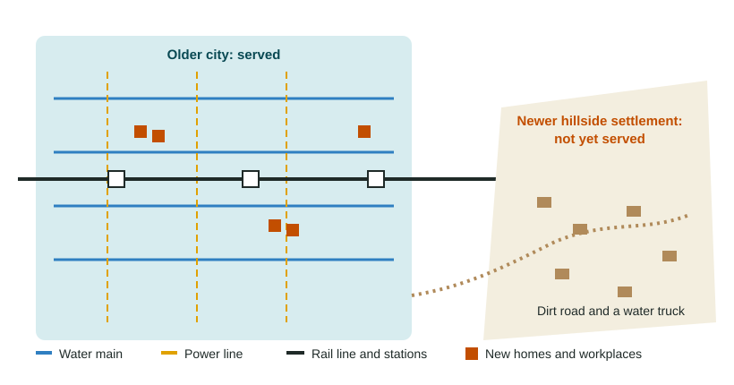

A city runs on systems most people only notice when they fail: the pipes that bring water, the wires that bring power, the rails and roads that carry people to work. This topic is about how the location and quality of those systems shape who prospers.
What infrastructure is
Infrastructure is the set of basic physical systems and public facilities a place needs to function. Geographers group it into four kinds:
- Transport: roads, bridges, rail and bus lines, ports and airports.
- Utilities: water supply, sewers, power grids and waste collection.
- Communications: phone lines, cell towers and internet cables.
- Public facilities: schools, clinics, hospitals and police and fire stations.
Most infrastructure is costly to build and lasts for decades, so decisions about where to put it shape a city long after they are made.
Location: growth follows the network

Firms and families want to be where the network already reaches. A new rail station or highway exit makes nearby land easier to reach, so land values rise and new offices, stores and homes follow. In London, the Elizabeth line, which opened in 2022, was planned partly to draw investment to the east of the city along its route. At the national scale, the same logic holds: provinces with ports, power and good roads usually attract more factories and jobs than provinces without them.
Infrastructure can also harm. In the 1960s, Interstate 94 was built through the Rondo neighborhood of St. Paul, Minnesota, the center of the city's Black community. Hundreds of homes and businesses were destroyed, and the neighborhood was split in two. The highway sped commuters from the suburbs while the people who lived along its route paid the cost. Many US cities have similar stories.
Quality: good systems save time, money and health
It is not enough for a network to exist; it must work. Where power cuts are frequent, as in many fast-growing cities, shops and factories run diesel generators, which raises costs and pollutes the air. Where water is unsafe, families boil it or buy it, and children miss school with illness. In many squatter settlements, such as Kibera in Nairobi, Kenya, households share toilets and buy water by the container, because the city's pipes and sewers were never extended to land the residents do not own.
Good infrastructure does not always mean expensive infrastructure. In 1974, Curitiba, Brazil, opened buses running in their own lanes, and it later added raised tube stations where riders pay before boarding, so buses load fast, almost like a train. It cost far less than a subway, and many other cities, including Bogotá, Colombia, later built similar bus rapid transit systems.
Communications as infrastructure
Phone and internet networks are infrastructure too. In 2007, the Kenyan mobile network Safaricom launched M-Pesa, a service for sending and storing money by text message. Because cell towers reached far more Kenyans than bank branches did, millions of people could pay bills and receive money from relatives in cities without a bank account. At the local scale, a household without home internet has a harder time doing schoolwork or applying for jobs, a gap that grew obvious when schools went online in 2020.
Infrastructure and development
| Infrastructure | Economic effect | Social effect |
|---|---|---|
| Rail and bus lines | More workers can reach more jobs; land near stations gains value | Shorter commutes; access for people without cars |
| Water and sewers | Healthier workers; firms can locate safely | Fewer waterborne diseases; less time spent fetching water |
| Power | Factories and shops run without costly generators | Light for study at night; refrigeration for food and medicine |
| Internet and phones | Firms reach customers; mobile payments | Online school, health advice and contact with family |
When infrastructure reaches some districts and not others, it widens gaps in income, health and opportunity. Extending it to places left out is one of the most powerful tools a city has.